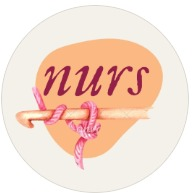

🌸 My hobbies
In my daily life, I pursue various hobbies to relax, be creative, and recharge my batteries. I enjoy both active and quiet time. Here are a few of the pursuits that bring me the most joy.👇
🧶 Crochet
Crochet is therapy for me! Creating something by hand fulfills me and makes me feel productive. And I share it as much as I can on my social media accounts. Here are a few examples for you. If you'd like to follow along, just click on my logo.. 
🏸 Badminton
One of my favorite sports activities is badminton. Because it requires both reflexes and concentration, it keeps me mentally sharp. I also participated in and performed at my university's sports festivals. I competed solo on the Engineering Faculty Women's Team in 2022, placing third, competing with my team in 2024, and fourth in 2025.
🥾 Hiking
I love being surrounded by nature. Hiking, exploring new places, and getting fresh air bring me peace.